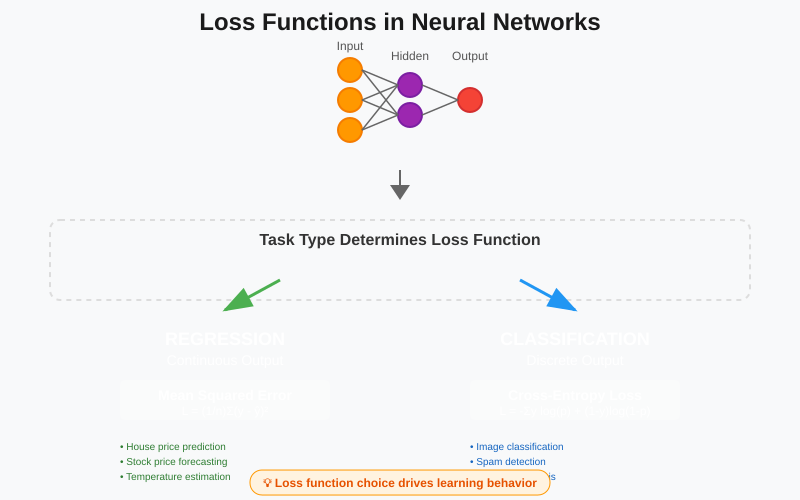
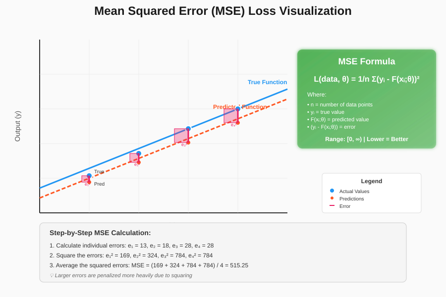
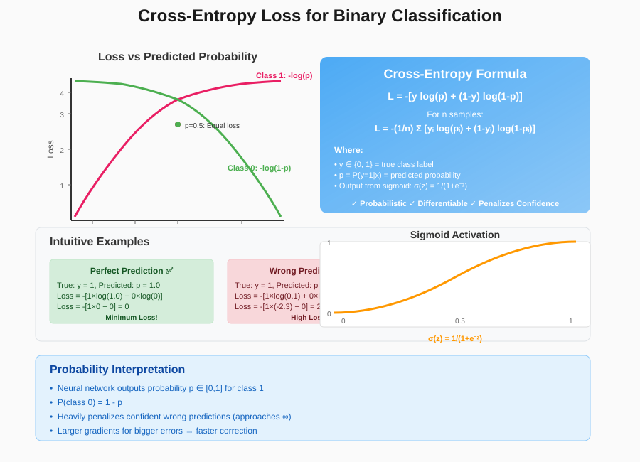
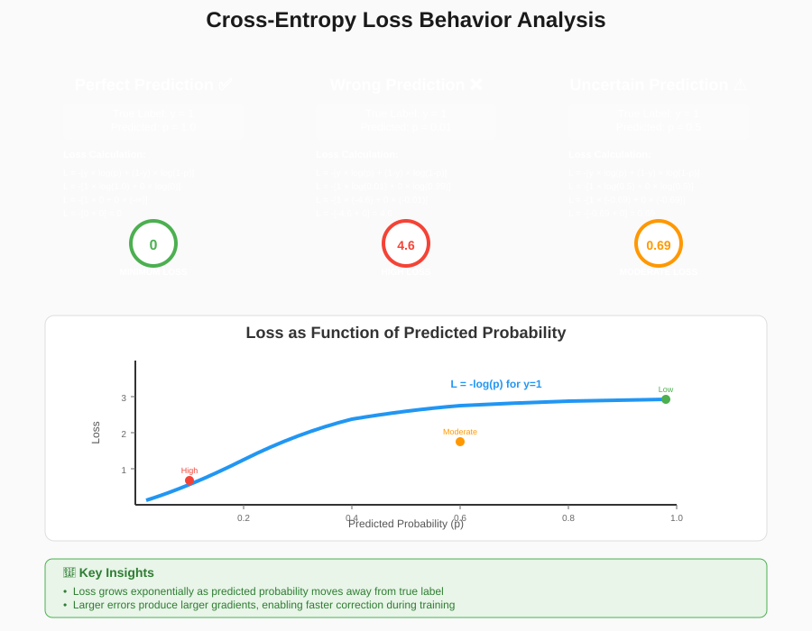
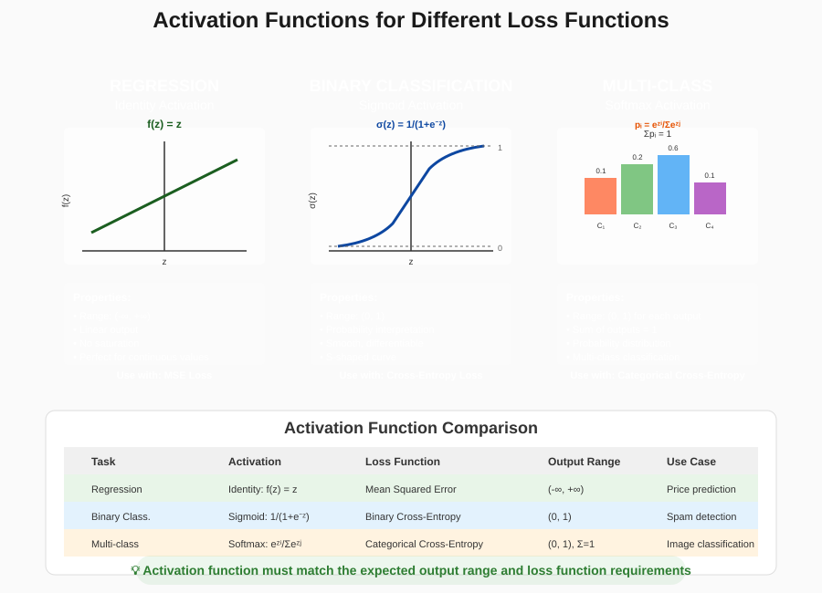
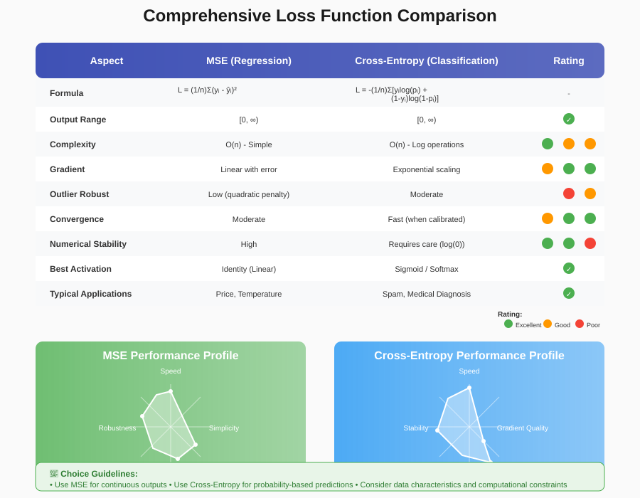

Loss Functions in Neural Networks

📋 Quick Navigation
- 🎯 Overview
- 📈 Regression Loss Functions
- 🔢 Classification Loss Functions
- 🧠 Intuition Behind Cross-Entropy Loss
- ⚡ Activation Functions for Different Tasks
- 📊 Loss Function Comparison
- 🔗 References & Further Reading
🎯 Overview
Loss functions are fundamental components in training neural networks, serving as the bridge between model predictions and desired outcomes. They quantify how well the neural network matches the expected output, providing the gradient information necessary for optimization algorithms like backpropagation.

A loss function mathematically measures the difference between predicted values and actual target values. The choice of loss function depends primarily on the type of machine learning task:
- Regression Tasks: Predict continuous numerical values
- Classification Tasks: Predict discrete class labels
The neural network learns by minimizing the loss function through iterative parameter updates, making the choice of appropriate loss function crucial for model performance.
📈 Regression Loss Functions
Mean Squared Error (Squared Loss)
For regression problems, the most commonly used loss function is the Mean Squared Error (MSE) or squared loss. This function calculates the average of squared differences between actual and predicted values.
Mathematical Formulation:
Where: - \(n\) = number of data points - \(y^i\) = actual target value for data point \(i\) - \(x^i\) = input features for data point \(i\) - \(F(x^i; \theta)\) = neural network prediction - \(\theta\) = neural network parameters

Key Properties of MSE
✅ Advantages: - Always produces positive values - Minimum value of 0 (perfect predictions) - Differentiable everywhere - Heavily penalizes large errors due to squaring
📊 Range: 0 to ∞
🎯 Interpretation: Lower values indicate better model performance
⚡ Activation Function: Identity function (linear output)
🔢 Classification Loss Functions
Cross-Entropy Loss (Negative Log-Likelihood)
For classification tasks, particularly binary classification, the standard loss function is cross-entropy or negative log-likelihood. This function is derived from probabilistic principles and works seamlessly with sigmoid activation functions.
Mathematical Formulation:
This can also be written as:

Probabilistic Interpretation
The cross-entropy loss stems from a probabilistic understanding of neural networks:
- Output Range: 0 to 1 (when using sigmoid activation)
- Interpretation: Output represents probability of belonging to class 1
- Complement: Probability of class 0 = 1 - P(class 1)
⚡ Activation Function: Sigmoid function for binary classification
🧠 Intuition Behind Cross-Entropy Loss
Understanding why cross-entropy works effectively requires examining its behavior in different prediction scenarios.

Case 1: Data Point Belongs to Class 1
Loss Function: \(L(\text{data}, \theta) = -\log(F(x^i; \theta))\)
Scenario Analysis:
| Predicted Probability | Log Value | Loss | Interpretation |
|---|---|---|---|
| F(x; θ) = 1.0 | log(1) = 0 | 0 | Perfect prediction ✅ |
| F(x; θ) = 0.5 | log(0.5) = -0.693 | 0.693 | Uncertain prediction ⚠️ |
| F(x; θ) = 0.0 | log(0) = -∞ | ∞ | Wrong prediction ❌ |
Case 2: Data Point Belongs to Class 0
Loss Function: \(L(\text{data}, \theta) = -\log(1 - F(x^i; \theta))\)
Scenario Analysis:
| Predicted Probability | Complement | Log Value | Loss | Interpretation |
|---|---|---|---|---|
| F(x; θ) = 0.0 | 1 - 0 = 1.0 | log(1) = 0 | 0 | Perfect prediction ✅ |
| F(x; θ) = 0.5 | 1 - 0.5 = 0.5 | log(0.5) = -0.693 | 0.693 | Uncertain prediction ⚠️ |
| F(x; θ) = 1.0 | 1 - 1 = 0.0 | log(0) = -∞ | ∞ | Wrong prediction ❌ |
🎯 Key Insights
- Perfect Predictions: Loss = 0 when model correctly predicts with 100% confidence
- Wrong Predictions: Loss approaches infinity for completely incorrect predictions
- Uncertainty Penalty: Moderate loss for uncertain predictions (around 0.5 probability)
- Smooth Gradients: Continuous function provides stable gradient information
⚡ Activation Functions for Different Tasks
The choice of activation function in the output layer depends on the type of task and corresponding loss function:

Task-Specific Recommendations
| Task Type | Loss Function | Output Activation | Output Range | Use Case |
|---|---|---|---|---|
| Regression | Mean Squared Error | Identity (Linear) | (-∞, +∞) | Predicting continuous values |
| Binary Classification | Cross-Entropy | Sigmoid | (0, 1) | Two-class problems |
| Multi-class Classification | Categorical Cross-Entropy | Softmax | (0, 1) | Multiple exclusive classes |
| Multi-label Classification | Binary Cross-Entropy | Sigmoid | (0, 1) | Multiple non-exclusive classes |
Mathematical Relationships
Sigmoid Function: \(\(\sigma(z) = \frac{1}{1 + e^{-z}}\)\)
Softmax Function: \(\(\text{softmax}(z_i) = \frac{e^{z_i}}{\sum_{j=1}^{K} e^{z_j}}\)\)
📊 Loss Function Comparison

Performance Characteristics
| Aspect | MSE (Regression) | Cross-Entropy (Classification) |
|---|---|---|
| Computational Complexity | O(n) | O(n) |
| Gradient Behavior | Linear with error | Exponential with probability |
| Robustness to Outliers | Low (quadratic penalty) | Moderate |
| Convergence Speed | Moderate | Fast (when well-calibrated) |
| Numerical Stability | High | Requires careful implementation |
Implementation Considerations
For Regression (MSE):
def mse_loss(y_true, y_pred):
return np.mean((y_true - y_pred) ** 2)
For Binary Classification (Cross-Entropy):
def binary_crossentropy(y_true, y_pred):
epsilon = 1e-15 # Prevent log(0)
y_pred = np.clip(y_pred, epsilon, 1 - epsilon)
return -np.mean(y_true * np.log(y_pred) + (1 - y_true) * np.log(1 - y_pred))
🔍 Advanced Topics
- Focal Loss: Addresses class imbalance in classification
- Huber Loss: Robust alternative to MSE for regression
- Wasserstein Loss: Used in generative adversarial networks
- Contrastive Loss: Popular in representation learning
10 Most Common Loss Functions in Machine Learning
Regression Loss Function
| Loss Function Name | Loss Function Description | Function |
|---|---|---|
| Mean Bias Error | Average prediction bias showing overestimation or underestimation tendency. | MSE = 1/n Σ(y - ŷ)² |
| Mean Absolute Error | Average magnitude of errors, ignoring direction of deviation. | MAPE = 1/n Σ|yi - ŷi|/yi × 100% |
| Mean Squared Error | Average of squared prediction errors, penalizing larger deviations. | MSE = 1/n Σ(Yi - Ŷi)² |
| Root Mean Squared Error | Square root of mean squared errors, showing typical prediction deviation. | RMSE = √[Σ|D(i) - P(i)|²/N] |
| Huber Loss | Balances Mean Squared Error and Mean Absolute Error, less sensitive to outliers. | Huber = {1/2(y-ŷ)² if |y-ŷ|≤δ; δ|y-ŷ|-1/2δ² if |y-ŷ|>δ} |
| Log Cosh Loss | Smooth, differentiable loss using log(cosh) of prediction errors. | logcosh = 1/n Σ log(cosh(ŷi - yi)) |
Classification Loss Function
| Loss Function Name | Loss Function Description | Function |
|---|---|---|
| Binary Cross Entropy (BCE) | Measures prediction error for binary classification using probability-based log loss. | BCE = -1/n Σ[yi×log(p(yi)) + (1-yi)×log(1-p(yi))] |
| Hinge Loss | Encourages correct classification by penalizing predictions within margin. | L(y) = max(0, 1 - t × y) |
| Cross Entropy | Measures difference between true distribution and predicted probability distribution. | H(p,q) = -Σ p(x) log q(x) |
| KL Divergence | Measures how one probability distribution diverges from another. | DKL(P‖Q) = Σ P(x) log(P(x)/Q(x)) |
Usage Guidelines
Regression Loss Functions
- MSE/RMSE: Best when you want to penalize large errors more heavily
- MAE: More robust to outliers, treats all errors equally
- Huber Loss: Good compromise between MSE and MAE, robust to outliers
- Log Cosh Loss: Smooth alternative to Huber loss, differentiable everywhere
Classification Loss Functions
- Binary Cross Entropy: Standard choice for binary classification problems
- Cross Entropy: Used for multi-class classification
- Hinge Loss: Commonly used with Support Vector Machines
- KL Divergence: Useful when comparing probability distributions
Key Considerations
- Outlier Sensitivity: MSE is sensitive to outliers, while MAE and Huber loss are more robust
- Differentiability: Some optimization algorithms require differentiable loss functions
- Interpretability: RMSE has the same units as the target variable, making it more interpretable
- Problem Type: Choose regression losses for continuous targets, classification losses for discrete targets
- Distribution Assumptions: Some losses work better with certain data distributions
🔗 References & Further Reading
📚 Essential Papers
- Cross-Entropy Method: Rubinstein, R. Y. (1999) - Foundational work on cross-entropy methods
- Deep Learning Losses: Goodfellow, I. et al. (2016) - Comprehensive coverage in Deep Learning textbook
- Focal Loss: Lin, T. Y. et al. (2017) - Addressing class imbalance in object detection
🛠️ Practical Resources
- PyTorch Loss Functions: Official Documentation
- TensorFlow Keras Losses: Keras Loss Functions Guide
- Hugging Face Training: Training and Fine-tuning
📖 Educational Materials
- CS231n Stanford: Convolutional Neural Networks for Visual Recognition
- Fast.ai Course: Practical Deep Learning for Coders
🎯 Interactive Tools
- Loss Function Visualizer - Interactive Colab notebook
- Neural Network Playground - Visual neural network experimentation
📝 Note: This documentation covers fundamental loss functions for neural networks. For specialized applications like generative models, reinforcement learning, or computer vision, additional loss functions may be more appropriate.
🔄 Last Updated: September 2025